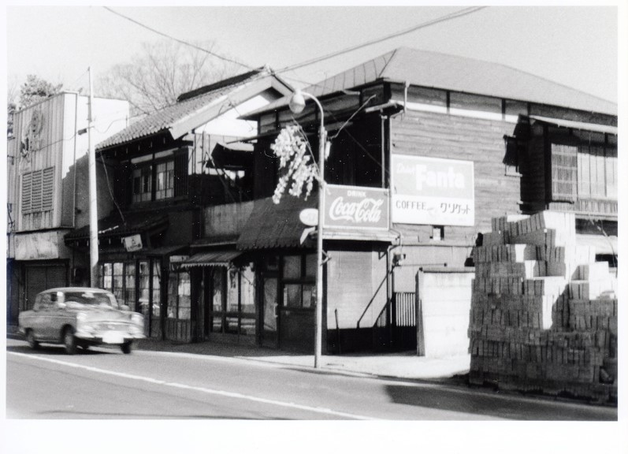
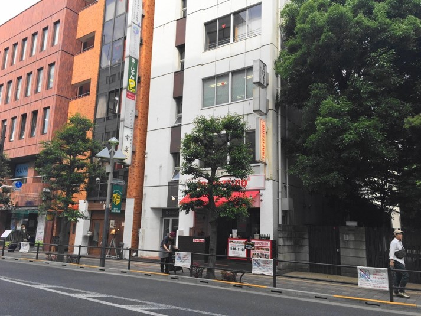

石井米ビル


八幡神社前交差点から吉祥寺駅側に延びる公園通りの東側４件目に「石井米店」があった。現在は、「石井米ビル」になっており、１階には創作中華酒房「幸宴」が入るなど、当時の面影はない。並びには洋裁店「よこぜき」や協和電機工業があったが、現在ではビルが立ち並ぶ通りとなっている。この場所周辺は石川さんのお気に入りだったのか、通りを挟んだ向かい側の写真も含め、さまざまな角度から撮影された写真が何枚も残っている。
この場所をはじめとする公園通りは昔と今とで大きく雰囲気が変わっている。それは、公園通りの拡幅工事があったからである。1941（昭和16年）に決定された武蔵野市の都市計画道路では、公園通りを９ｍから11ｍに拡幅することになっていた。しかし、三多摩地区の人口および交通量が急増したことから、1962（昭和37）年7月に大幅な改訂がおこなわれ、16ｍに拡幅する案へと変更された。拡幅分の幅員７ｍの内訳は、西側２ｍ、東側５ｍ。公園通り商店会は、道路の中心から東西を均等に3.5ｍずつ拡幅してほしいと要望したが、道路西側には名店会館という大型店舗があって変更は現実的に不可能であった。そのため、1962年から1965年までの４年間、公園通り商店会は拡幅への反対運動を展開したという。
このように五日市街道より南の公園通りの拡幅幅が東西で異なったため、吉祥寺通り（公園通り）は五日市街道以南と以北で少しずれてしまっている。この写真と現在の写真を比べてみると、こういった街の歴史が見えてくる。